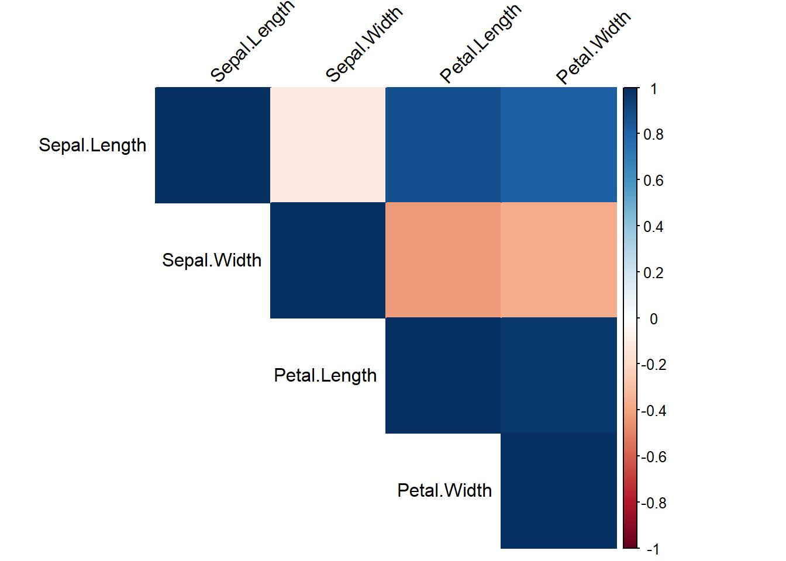
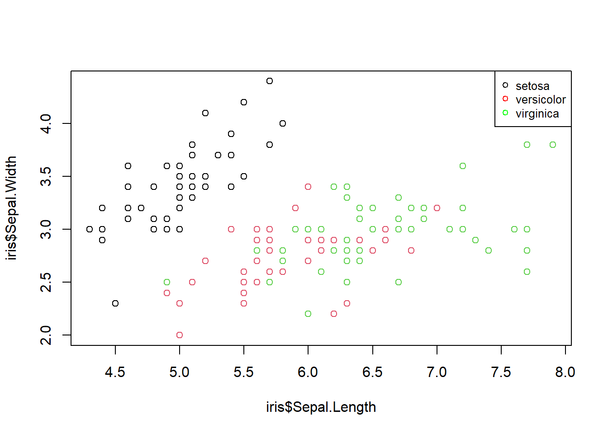
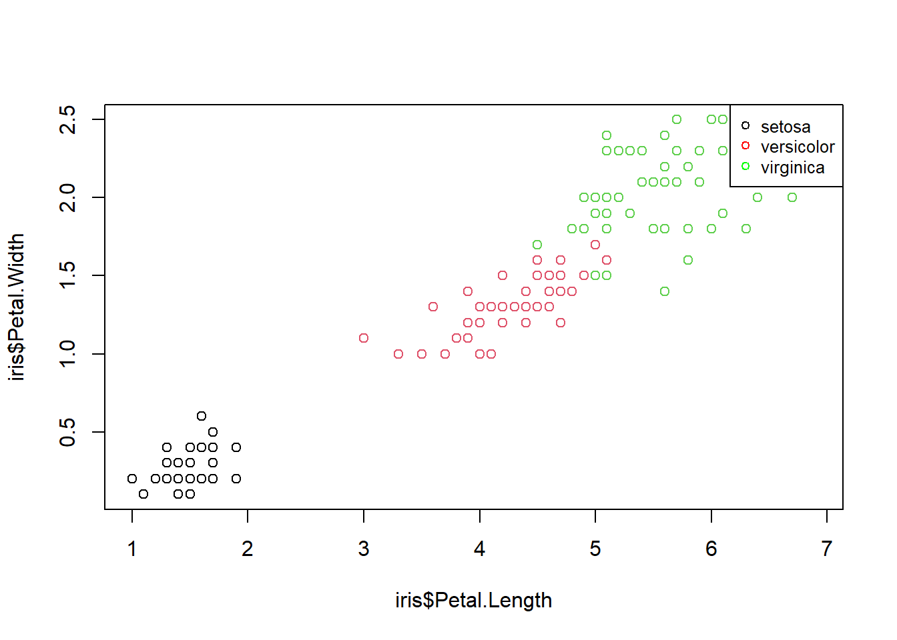
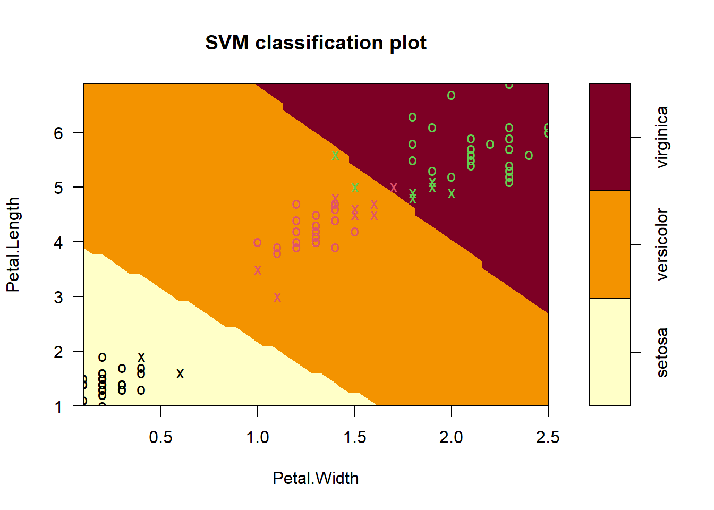
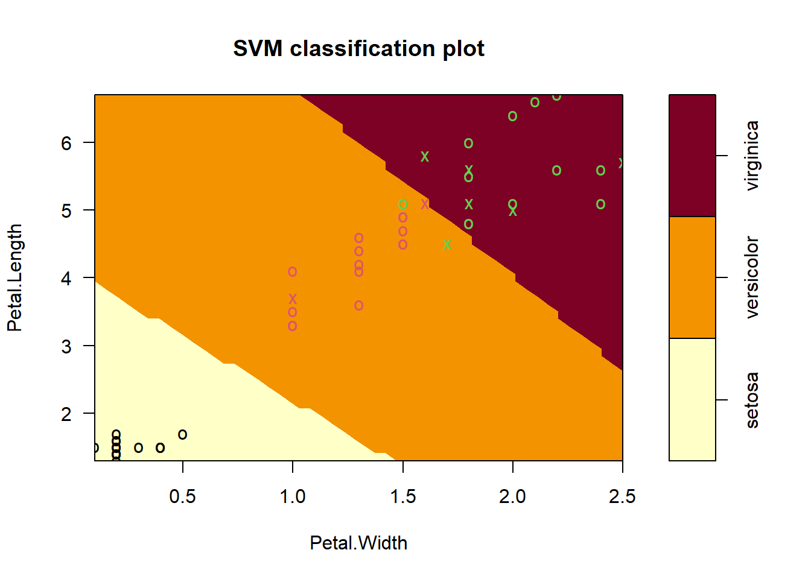
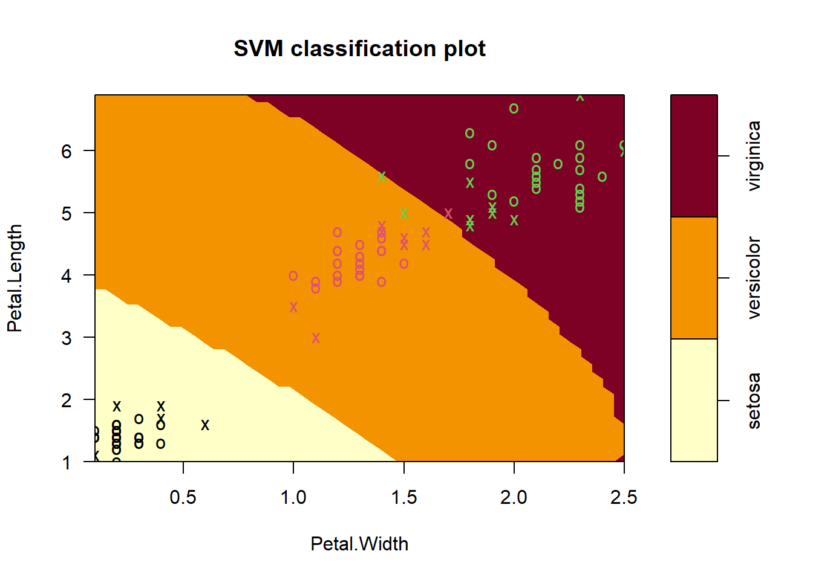
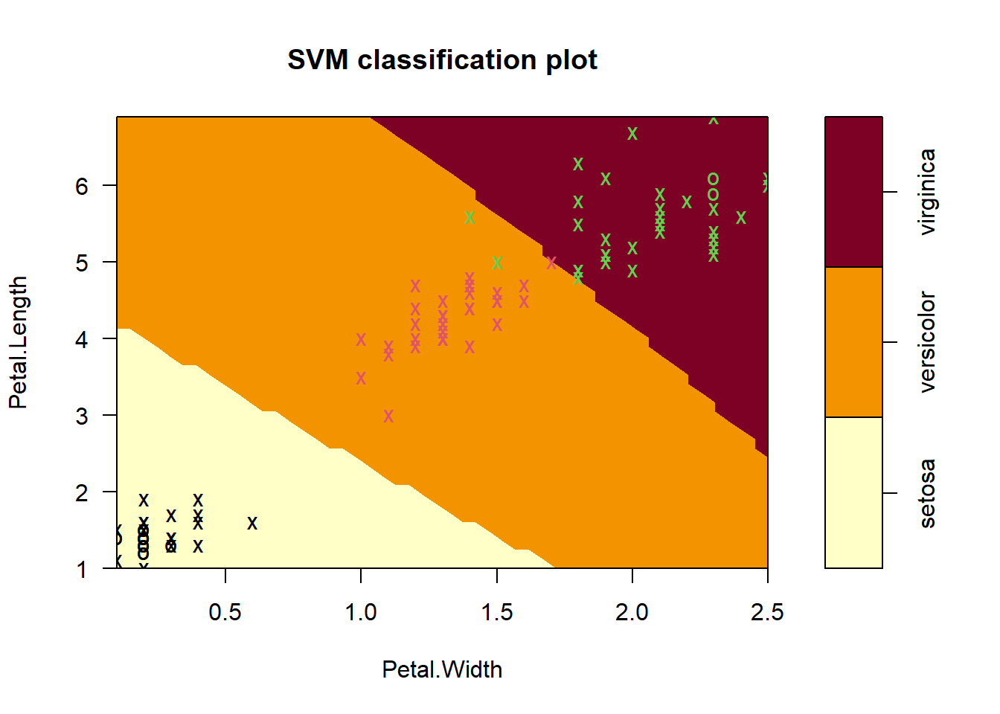

Support vector machines (SVM) are binary classifiers. For more than
two (binary) classes, classification is achieved by running binary
classification multiple times creatively.
The advantage of SVM is that they can perform non linear classification
therefore making them more flexible, and classification is achieved
using a hyperplane that separates the various classes.
SVMs can also be used for regression problems!
#suppressMessages(install.packages("tidyverse")) #installs the packages
suppressMessages(library(tidyverse)) #loads the installed package
# Correlation Visualization
#suppressMessages(install.packages("corrplot"))
suppressMessages(library(corrplot))
# Train Test split util
#suppressMessages(install.packages('caTools'))
suppressMessages(library(caTools))
# SVM
#suppressMessages(install.packages("e071"))
suppressMessages(library(e1071))First we start by importing the dataset, a basic one: iris. We can
use view() to check if dataset was correctly
imported.
This dataset contains information about the Sepal and Petal Length and
Width of 3 different iris species: Setosa, Versicolor, and Virginica
data(iris)
#View the dataset, to ensure the data is loaded correctly
view(iris)head(iris)## Sepal.Length Sepal.Width Petal.Length Petal.Width Species
## 1 5.1 3.5 1.4 0.2 setosa
## 2 4.9 3.0 1.4 0.2 setosa
## 3 4.7 3.2 1.3 0.2 setosa
## 4 4.6 3.1 1.5 0.2 setosa
## 5 5.0 3.6 1.4 0.2 setosa
## 6 5.4 3.9 1.7 0.4 setosastr(iris)## 'data.frame': 150 obs. of 5 variables:
## $ Sepal.Length: num 5.1 4.9 4.7 4.6 5 5.4 4.6 5 4.4 4.9 ...
## $ Sepal.Width : num 3.5 3 3.2 3.1 3.6 3.9 3.4 3.4 2.9 3.1 ...
## $ Petal.Length: num 1.4 1.4 1.3 1.5 1.4 1.7 1.4 1.5 1.4 1.5 ...
## $ Petal.Width : num 0.2 0.2 0.2 0.2 0.2 0.4 0.3 0.2 0.2 0.1 ...
## $ Species : Factor w/ 3 levels "setosa","versicolor",..: 1 1 1 1 1 1 1 1 1 1 ...summary() allows us to explore statistical data of each variable:
summary(iris)## Sepal.Length Sepal.Width Petal.Length Petal.Width
## Min. :4.300 Min. :2.000 Min. :1.000 Min. :0.100
## 1st Qu.:5.100 1st Qu.:2.800 1st Qu.:1.600 1st Qu.:0.300
## Median :5.800 Median :3.000 Median :4.350 Median :1.300
## Mean :5.843 Mean :3.057 Mean :3.758 Mean :1.199
## 3rd Qu.:6.400 3rd Qu.:3.300 3rd Qu.:5.100 3rd Qu.:1.800
## Max. :7.900 Max. :4.400 Max. :6.900 Max. :2.500
## Species
## setosa :50
## versicolor:50
## virginica :50
##
##
## We will plot a correlation matrix to see how features interact with each other. In SVM we need features that can easily allow the creation of an hyperplane to separate them, so this will give us a general look to what features to choose.
num.cols <- sapply(iris, is.numeric)
cor.data <- cor(iris[,num.cols])
corrplot(cor.data, method='color', type='upper', tl.col='black', tl.srt=45)
plot(iris$Sepal.Length,iris$Sepal.Width,col=iris$Species) #scatter plot sepal width against sepal length
legend("topright", legend=c("setosa", "versicolor", "virginica"), col=c("black", "red", "green"), pch=1, cex=0.8)
The separation between versicolor and virginica does not look good. It means that SVMs will not be able to identify a good separation hyperplane later if we are going to use these two attributes as input variables. We would achieve low prediction accuracy.
plot(iris$Petal.Length,iris$Petal.Width,col=iris$Species)
legend("topright", legend=c("setosa", "versicolor", "virginica"), col=c("black", "red", "green"), pch=1, cex=0.8)
The separation between the 3 species is much better, so I’ll use Petal Length and Petal Width as input variables to the SVM model.
# Set random seed
set.seed(123)
# 2/3 Train/Test Split
split = sample.split(iris$Species, SplitRatio = 2/3)
train_split = subset(iris, split==TRUE)
test_split = subset(iris, split==FALSE)summary(train_split)## Sepal.Length Sepal.Width Petal.Length Petal.Width
## Min. :4.300 Min. :2.200 Min. :1.000 Min. :0.100
## 1st Qu.:5.100 1st Qu.:2.800 1st Qu.:1.600 1st Qu.:0.300
## Median :5.800 Median :3.000 Median :4.300 Median :1.300
## Mean :5.842 Mean :3.039 Mean :3.756 Mean :1.208
## 3rd Qu.:6.450 3rd Qu.:3.300 3rd Qu.:5.100 3rd Qu.:1.850
## Max. :7.700 Max. :4.000 Max. :6.900 Max. :2.500
## Species
## setosa :33
## versicolor:33
## virginica :33
##
##
## summary(test_split)## Sepal.Length Sepal.Width Petal.Length Petal.Width
## Min. :4.600 Min. :2.000 Min. :1.300 Min. :0.100
## 1st Qu.:5.100 1st Qu.:2.800 1st Qu.:1.550 1st Qu.:0.350
## Median :5.700 Median :3.000 Median :4.400 Median :1.300
## Mean :5.845 Mean :3.092 Mean :3.763 Mean :1.182
## 3rd Qu.:6.300 3rd Qu.:3.400 3rd Qu.:5.100 3rd Qu.:1.800
## Max. :7.900 Max. :4.400 Max. :6.700 Max. :2.500
## Species
## setosa :17
## versicolor:17
## virginica :17
##
##
## As we can see, we performed a stratified split, as the number of species per class is balanced, both in the training and test sets.
Now we select only the features (Petal Length and Petal Width) that are going to be used for the model input:
input_variables <- c("Petal.Length", "Petal.Width", "Species")
train_set <- train_split[input_variables]
test_set <- test_split[input_variables]For simplicity we will start by creating a Linear SVM.
The argument scale tells the SVM to scale each feature
to have mean zero or standard deviation one. This should almost always
be used since all kernel methods are based on distance.
svm_linear <- svm(Species~.,
data = train_set,
type = "C-classification",
kernel = "linear",
scale = TRUE)
summary(svm_linear)##
## Call:
## svm(formula = Species ~ ., data = train_set, type = "C-classification",
## kernel = "linear", scale = TRUE)
##
##
## Parameters:
## SVM-Type: C-classification
## SVM-Kernel: linear
## cost: 1
##
## Number of Support Vectors: 22
##
## ( 2 11 9 )
##
##
## Number of Classes: 3
##
## Levels:
## setosa versicolor virginicaThen we can plot the trained SVM, and see the hyperplanes created to separate the 3 classes, based on the 2 features we selected:
plot(svm_linear, train_set, main="SVM Linear (Training Set)")
After creating and training the model on the train set, it is time to evaluate our model in the test set.
pred_svm_linear <- predict(svm_linear, test_set)Confusion Matrix
We will start by checking the confusion matrix. We see that the model got 4 predictions wrong:
cm_svm_linear <- table(pred_svm_linear, test_set$Species)
cm_svm_linear##
## pred_svm_linear setosa versicolor virginica
## setosa 17 0 0
## versicolor 0 15 2
## virginica 0 2 15Accuracy
Then we calculate the accuracy for this model
acc_svm_linear <- mean(pred_svm_linear==test_set$Species)
acc_svm_linear## [1] 0.9215686And finally we can plot the Linear SVM on with the test set points:
plot(svm_linear, test_set, main="SVM Linear (Test Set)")
Conclusions
Even though we used the simplest SVM (Linear) it achieved a
really good performance. This also comes from the fact that this is a
simple dataset, and it does not contain many observations. Still we will
explore more options and try to increase.
The next kernel we are going to explore is the Radial one, as it is one of the most popular kernels used. This should enable a better separation than the linear one.
svm_radial <- svm(Species~.,
data = train_set,
type = "C-classification",
kernel = "radial",
scale = TRUE)
summary(svm_radial)##
## Call:
## svm(formula = Species ~ ., data = train_set, type = "C-classification",
## kernel = "radial", scale = TRUE)
##
##
## Parameters:
## SVM-Type: C-classification
## SVM-Kernel: radial
## cost: 1
##
## Number of Support Vectors: 28
##
## ( 5 11 12 )
##
##
## Number of Classes: 3
##
## Levels:
## setosa versicolor virginicaplot(svm_radial, train_set, main="SVM Radial (Training Set)")
pred_svm_radial <- predict(svm_radial, test_set)plot(svm_radial, test_set, main="SVM Radial (Test Set)")Confusion Matrix
cm_svm_radial <- table(pred_svm_radial, test_set$Species)
cm_svm_radial##
## pred_svm_radial setosa versicolor virginica
## setosa 17 0 0
## versicolor 0 15 2
## virginica 0 2 15Accuracy
acc_svm_radial <- mean(pred_svm_radial==test_set$Species)
acc_svm_radial## [1] 0.9215686Even though the hyperplanes look completely different, the scores remained the same (once again, due to the simple dataset). Nevertheless, it gave us a brief look on the difference between the Linear and Radial Kernels.
To further improve the models one can use the tune() function. Here we will try to improve the Radial SVM by tuning its parameters: Cost and Gamma. In the tuning process a 5 K-Fold is applied.
tune_svm_radial <- tune.svm(Species~.,
data = train_set,
type = "C-classification",
kernel = "radial",
scale = TRUE,
tunecontrol = tune.control(cross = 5),
cost = c(0.01, 0.1, 1, 10),
gamma = seq(0.1, 1, 0.1))
summary(tune_svm_radial)##
## Parameter tuning of 'svm':
##
## - sampling method: 5-fold cross validation
##
## - best parameters:
## gamma cost
## 0.3 0.1
##
## - best performance: 0.02
##
## - Detailed performance results:
## gamma cost error dispersion
## 1 0.1 0.01 0.7078947 0.18721238
## 2 0.2 0.01 0.7078947 0.18721238
## 3 0.3 0.01 0.7078947 0.18721238
## 4 0.4 0.01 0.7078947 0.18721238
## 5 0.5 0.01 0.7078947 0.18721238
## 6 0.6 0.01 0.7078947 0.18721238
## 7 0.7 0.01 0.7078947 0.18721238
## 8 0.8 0.01 0.7078947 0.18721238
## 9 0.9 0.01 0.7078947 0.18721238
## 10 1.0 0.01 0.7078947 0.18721238
## 11 0.1 0.10 0.3647368 0.15549269
## 12 0.2 0.10 0.1115789 0.06648579
## 13 0.3 0.10 0.0200000 0.02738613
## 14 0.4 0.10 0.0300000 0.04472136
## 15 0.5 0.10 0.0300000 0.04472136
## 16 0.6 0.10 0.0300000 0.04472136
## 17 0.7 0.10 0.0300000 0.04472136
## 18 0.8 0.10 0.0300000 0.04472136
## 19 0.9 0.10 0.0300000 0.04472136
## 20 1.0 0.10 0.0300000 0.04472136
## 21 0.1 1.00 0.0300000 0.04472136
## 22 0.2 1.00 0.0300000 0.04472136
## 23 0.3 1.00 0.0300000 0.04472136
## 24 0.4 1.00 0.0300000 0.04472136
## 25 0.5 1.00 0.0300000 0.04472136
## 26 0.6 1.00 0.0300000 0.04472136
## 27 0.7 1.00 0.0300000 0.04472136
## 28 0.8 1.00 0.0300000 0.04472136
## 29 0.9 1.00 0.0300000 0.04472136
## 30 1.0 1.00 0.0300000 0.04472136
## 31 0.1 10.00 0.0300000 0.04472136
## 32 0.2 10.00 0.0300000 0.04472136
## 33 0.3 10.00 0.0200000 0.02738613
## 34 0.4 10.00 0.0200000 0.02738613
## 35 0.5 10.00 0.0200000 0.02738613
## 36 0.6 10.00 0.0200000 0.02738613
## 37 0.7 10.00 0.0200000 0.02738613
## 38 0.8 10.00 0.0200000 0.02738613
## 39 0.9 10.00 0.0200000 0.02738613
## 40 1.0 10.00 0.0200000 0.02738613Afterwards we proceed to use the best model obtained (with the smallest error) to predict on the test set and evaluate its performance
svm_radial_best <- tune_svm_radial$best.model
summary(svm_radial_best)##
## Call:
## best.svm(x = Species ~ ., data = train_set, gamma = seq(0.1, 1, 0.1),
## cost = c(0.01, 0.1, 1, 10), type = "C-classification", kernel = "radial",
## scale = TRUE, tunecontrol = tune.control(cross = 5))
##
##
## Parameters:
## SVM-Type: C-classification
## SVM-Kernel: radial
## cost: 0.1
##
## Number of Support Vectors: 83
##
## ( 19 33 31 )
##
##
## Number of Classes: 3
##
## Levels:
## setosa versicolor virginicaplot(svm_radial_best, train_set, main="SVM Best Radial (Training Set)")
pred_svm_radial_best <- predict(svm_radial_best, test_set)cm_svm_radial_best <- table(pred_svm_radial_best, test_set$Species)
cm_svm_radial_best##
## pred_svm_radial_best setosa versicolor virginica
## setosa 17 0 0
## versicolor 0 16 2
## virginica 0 1 15acc_svm_radial_best <- mean(pred_svm_radial_best==test_set$Species)
acc_svm_radial_best## [1] 0.9411765plot(svm_radial_best, test_set, main="SVM Best Radial (Test Set)")With the new parameters, this Radial SVM made one less error which enables more accurate predictions!
This project showcased the application of Support Vector Machines (SVMs) for iris species classification in R. It explored data features, implemented both linear and radial SVMs, and fine-tuned the radial SVM for optimization. Despite the dataset’s simplicity, the models demonstrated strong performance, highlighting the effectiveness of SVMs in classification tasks.